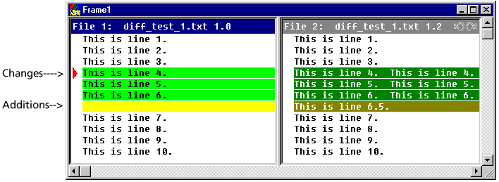
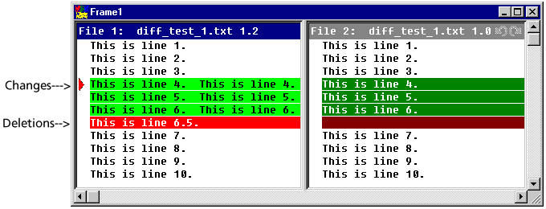

When you view differences using Actions | Show Differences, File 1 is used as the base file and File 2 is compared to File 1. Differences between the files are categorized into:
Placeholders are the blocks of colors used to identify the types of differences between the files. Each difference type (additions, deletions, and changes) has two placeholders (or colors) assigned to it: one for selected one for unselected.
Windows users have the option of changing the colors of the placeholders. To change the colors, from the Serena ChangeMan Merge Tool, click the Configuration () button and select the Colors tab. Windows Users have the option of displaying a color legend to help identify placeholders. To display a color legend, from the Serena ChangeMan Merge Tool, click the Color Tips () button. The Color Tips dialog appears:
The following examples show how the differences between two files can vary depending on the file you select as File 1 (the base file).
This example shows two revisions from the same versioned file. Version 1.0 was selected as File 1 (base file) and version 1.2 was selected as File 2.
Lines 4, 5, and 6 have been changed and are highlighted as one block of differences. These differences are identified by change placeholders. Line 6.5 was added to File 2 and is highlighted as another block of differences. These differences are identified by addition placeholders.
Using the same files as above but reversing the order of the files, you get the following results.
Lines 4, 5, and 6 are still highlighted as differences and identified by change placeholders. However, the added line, line 6.5, is now in File 1 (the base file) but no longer in File 2. This difference is identified by deletion placeholders.
| Comparing Files | Show Differences dialog box |
| About the Serena ChangeMan Merge Tool |